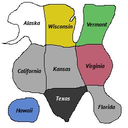

Copyright © 2014 AK Sommerville
Contact: aksommerville@gmail.com
USE AT YOUR OWN RISK. ALL WARRANTIES DISCLAIMED.
This software is free to use, modify, and distribute.
If you must insist on legal terms, let's use GNU GPL.
If you didn't receive source code with the program, email me and I'll send you the latest.
Everything in this game is my own creation, down to the very last byte.
Feel free to reuse any of it. Code, graphics, sound effects... go nuts!
CTM was written principally for the Raspberry Pi. I have also tested it thoroughly on MacOS (Mavericks) and Debian (Wheezy). I've ported it to Windows using MinGW and WINE, but I don't use Windows at home so that's entirely untested. CTM can be configured to use libSDL for its video, audio, and input, so that makes it very portable.
We assume a GNU-ish build environment: gcc, make, etc. Compiling should be as simple as running make in the unpacked directory. If you have specific needs at compile time, you may want to set CTM_CONFIG to a unique value, and add a new configuration block in Makefile. Examine Makefile, it should be pretty self-explanatory. I use CTM_CONFIG to distinguish target platforms, eg there is a lot of code for Raspberry Pi which must not be compiled for MacOS, etc.
Once built, run make install to dump the compiled program in a predetermined location on your system. See etc/tool/install if you want to tweak that process (it's very simple).
If you have the source code, use its installer.
For MacOS, the distributable package is fully self-contained. Put it whereever you want and it should just work.
For other systems, you should copy the executable (ctm) to somewhere in your PATH. I recommend /usr/local/bin/ctm. Then put the whole directory ctm-data somewhere that the program can find it. I recommend /usr/local/share/ctm. If necessary, set CTM_ROOT when running to declare the data directory's path.
Launch ctm with no arguments and everything should just work. If it fails to launch, confirm that the data directory is somewhere findable (or set CTM_ROOT). There are two extra arguments if you want them: --fullscreen=0|1 and --audio=0|1.
Press ESC at any time to quit.
When running under X11 (Linux), press F to toggle fullscreen. In theory, this should work with libSDL (MacOS,Windows) too, but it hardly ever does. The Raspberry Pi build uses video hardware directly, so it's always fullscreen.
Input should self-configure. On a keyboard, use arrow keys and Z, X, C, and ENTER. Joysticks map each button to Pause or the three assignable actions, willy-nilly. If you don't like the way a device is mapped, see input.cfg in your data directory. When an unknown device is detected, we dump its configuration text to the console. You can copy and paste that into input.cfg, and tweak as necessary. The program itself never modifies input.cfg.
You are an ancient Egpytian Pharaoh whose mummy has come to live to avenge yourself against the archaeologists who defiled your tomb. Also, you're running for President.
American politics are driven by two parties. There's the Frostbite party (blue), and the Blood party (red). FWIW, these aren't really meant to correspond to the real-world Democratic and Republican parties. I've tried to keep real politics out of the game as much as possible.
Presidential elections in America are conducted through the Electoral College, meaning that only someone with higher education can understand how it works. Each of the 9 [sic] states conducts its own election, and their picks are then compared to each other. In real life, each state has a count of electoral votes proportionate to its representation in Congress. In CTM, each state has just one electoral vote. It is possible for a candidate to win the most votes, but still lose the election. (In real life, it last happened in 2000; in CTM it happens pretty often). Ties in CTM are unusual but possible. When it happens, we simply don't declare a winner.
If a voter is likely to vote for your opponent, you have three basic options:
There isn't enough time to speak to every voter individually. A better way to get your message out is to use the radio. There are 15 radio stations in America: One for each state, and one for each of the six colors. Every voter is reachable via two of those radio stations. When you speak on the radio, every eligible voter hears it.
A speech heard on the radio is not as persuasive as a speech heard in person, but a whole lot more people will hear it.
Voters are also swayed when they see you kill something. If you kill a pest (racoon, owl, kitten, etc), they will like you. If you kill a human, they will reconsider. So if you plan to reduce the voting pool via murder, try not to leave any witnesses alive. Just like real life.
When a voter is persuaded, there's a one-second window where new information will be ignored. You can take advantage of this by delivering a speech immediately before you murder someone. The witnesses nearby will be busy thinking about what you said, and they won't notice you killing a guy. (note: This doesn't work in real life).
If you acquire a projectile weapon, no one will know where the projectiles came from. You can kill blamelessly with these.
As Lyndon Johnson used to say:
In your inventory screen, there's a map of the country, a scatter graph, and two bar graphs. States in the map show blue or red if a state is expected to vote one way or the other. They may be gray, if it's too close to call. The scatter graph shows a dot for every voter in this state, organized by color. The dots' position left or right indicates their sentiment. Far left means they're very likely to vote blue, far right means they're very likely to vote red. The bar graphs show a simple summary of the current state and the whole country.
You can't get demographic-specific data nationwide, only for the state you're standing in.
In our condensed version of the United States, there are only nine states. There are also six colors of people, and each color has one state where they are the majority. The states have disparate populations, in the same order as their real-life counterparts. (Same order, but not proportionate).
|  |
|
Red and blue voters begin with a significant bias towards that party. Other voters begin close to neutral.
Players begin in either Hawaii or Virginia, depending on their party. The state where you begin is already solidly supporting you.
It's a good idea to kill beasts any time you see them. They leave little prizes, and any voters who see you killing monsters will favor you.
There are three beasts that can appear anywhere: Racoons, owls, and kittens. Each state also has its own local pest, which is no different from the others except in appearance.
There are also nine minibosses, one in each state. Kill a miniboss and you get a Fabulous Prize, usually a new weapon.